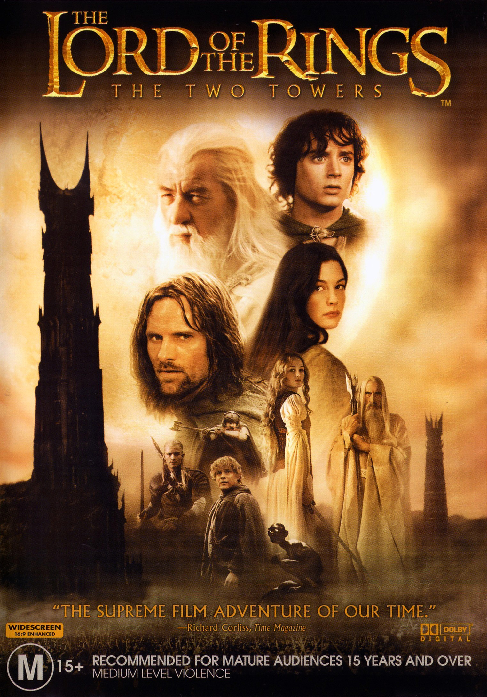

The Two Towers

- Frodo and Sam are heading to Mordor to destroy the ring, and meet Gollum who has been stalking them for the ring
- They turn the tables on him and make him be their guide to Mordor
- Meanwhile Aragorn, Gimli and Legolas are tracking down Merry and Pippin
- They end up in Rohan, land of the horse riders and are told Merry and Pippin were killed
- But actually Merry and Pippin ran into a forest and met a talking tree
- It turns out Sauron's evil has spread to Rohan, and the king is possessed by a minion of Sauron
- Gandalf gives him a good old fashioned exorcism, but it turns out Sauron is invading Rohan
- So they all retreat to a mountain hideaway and have literally the most epic siege scene in a movie ever
- Gandalf comes in at the last minute and saves them all, having been resurrected earlier in the movie
- Meanwhile Merry and Pippin lead a bunch of talking trees and overthrow an evil wizard
- This whole time Frodo, Sam and Gollum are making their way towards Mordor, but get captured by another kingdom
- The second great installment in the series, raises the stakes and we meet even more awesome characters